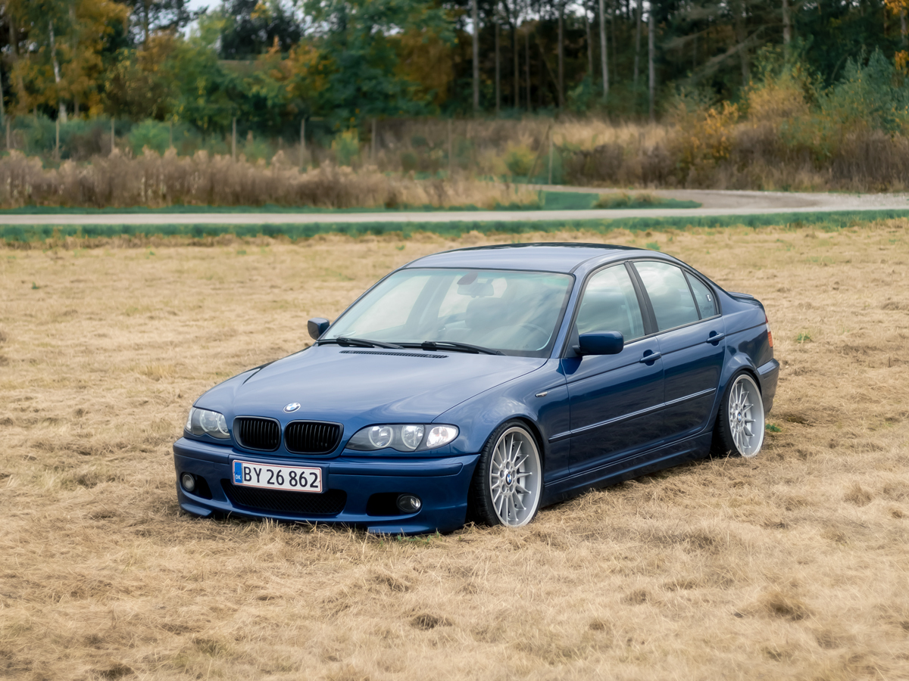
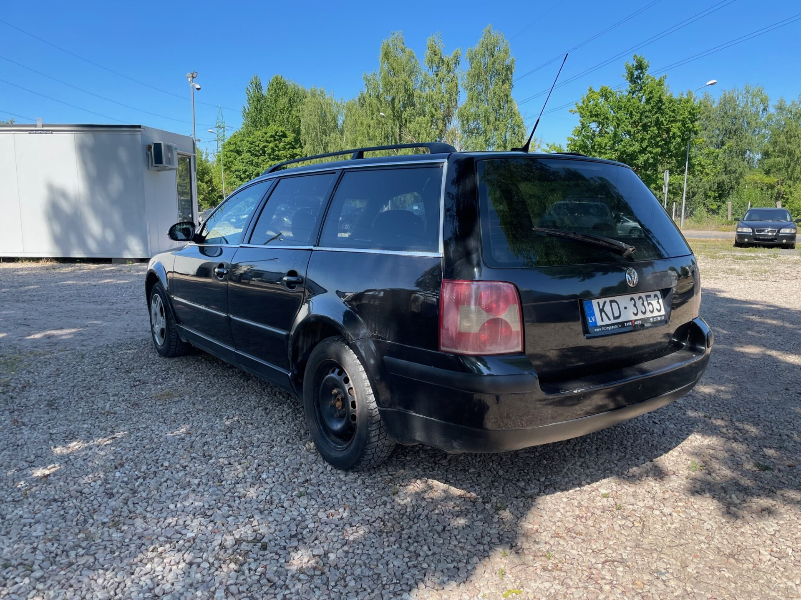

Par Autolog
AutoLog ir platforma kur jebkurš auto īpašnieks var uzturēt informāciju par saviem auto vienuviett

BMW e46 330d
Uz tirgu iet mēmākais aparāts
nav sists nav krāsots
tikko no vācijas, sliekšņi dzīvi
labi saglabājies eksemplārs
150kw + chips, iet zvērā

VW passat 1.9TDI
Pārdošanā vw passat 96kw
nemirstīgais 1.9tdi motors
sliekšņi pārmetināti un dzīvi
jauna skate, katalizators vietā

Audi A4 b5
Audi a4 b5 1.9tdi
skate nav un nebūs
derēs krūmu gonkām vai detaļām
vecais labais sūknis
ēd eļļu